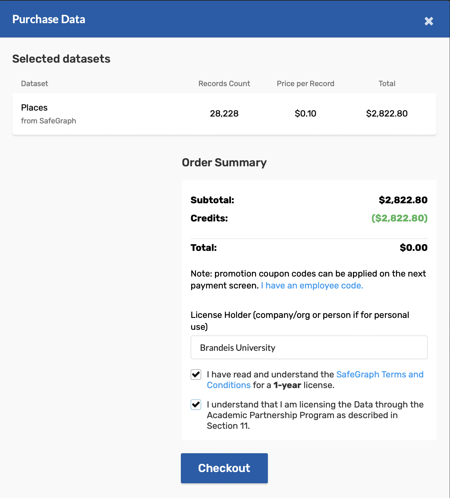

Some updates
- Mask Mandate
- IA (Instructional Assistant) not TA
- Yellow cards
Pause
- This is not a programming course
- R is a tool for learning data analytics
- Suppose you want to be a writer
- What do you worry about the most?
One more thing
- How to choose a programming language?
- the most popular language?
- Could R give me a job?
- Mark Zuckerberg, Steve Jobs, Bill Gates
- Computer language is transferable!
Today, we are going to talk about
data analysis pipeline
Question driven task vs. Data driven task
This is not exhaustive nor exclusive
Feedback loop
- Q. Advanced degrees are valuable?
- You have to start a search reliable data
- Must think about if the question is answerable
- Suppose you have big tech HR resources
- data sources would help narrow down
- Access is always an issue
- Creativity is a huge plus
- Prior knowledge/experience/research
John Siegfried said
There is no unemployment among Ph.D.s in economics
- Demand for Econ/Bus Ph.D. has been growing fast
- Suppose you are considering this option
- in fact, gov agencies and firms are wondering this
- You want to know long-term outcomes
- What would you do?
Data is not given
- How to access the list of individuals?
- Ask universities?
- Prior knowledge
- Good, I have access to the list. Then?
- Always need to go back to the blue print
- need employment histories/any measure of outcomes
- Google some economists
- C.V./resumes/Linkedin profiles online
Define the task
- Need to select years and schools
- determine the range of scope
- redefine the question
- Consult data science methods
- scraping information online
- formatting the information into tables
- Set up the validation criteria
- Discuss analysis methods
Computing techniques are sometimes overrated
Let's talk about SafeGraph
Consumer research 2.0
- Measurement is just a matter of imputation
- Growing interest on micro consumer data
- Credit card data
- App ratings data
- Smartphone traking data
- Conusmer's visiting patterns would approximate purchasing patterns
- Covid situation makes this data popular
- SafeGraph is tracking smartphone based on POI
- Point of interest (POI) is geograhpical places such as a physcial store
- It idenfities user's home and tracks visiting patterns to POI
The final project is based on this data set
- Let's from the access: Follow the link
- Fill out the form and use bradeis email account!
- You will receive an email about Login Credentials
- you will have a temporary password
- Then, visit the following link: Follow the link
- Academic access limits the credit
- follow the instructions carefully

- Type Brandeis University and check the boxes
- Click check out, and then you will receive an email
It is your job to understand this data
Some people use it as a block of codes to run,
but there is no hard answer
An algorithm is a sequence of computational steps that process the input to produce the output
It describes a specific computational procedure
to solve the problem
But most data science literature/practitioner
focus on efficient algorithms
How long does an algorithm take to produce its result?
If computers were infinitely fast and computer memory were free, would you have any reason to study algorithms?
Let's try to think about a sorting problem
How to sort: 5, 10, 2, 4, 1, 7
Insertion sort vs. Merge Sort
- Insertion sort takes time roughly to $a \times n^2$ to sort $n$ numbers
- Merge sort takes time roughly to $b \times n \times \log_2{n}$ to sort $n$ numbers
- Typically $a < b $
- The input size $n$ will impact on the running time more and more